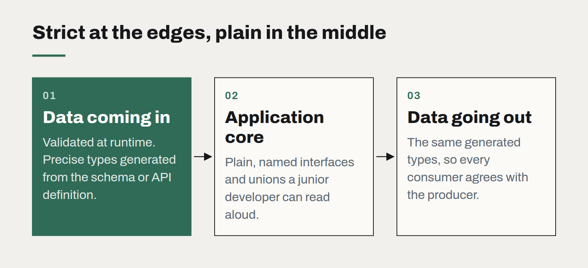

TypeScript everywhere, and where it stops paying
Types across the whole stack have been one of the best trades in software this decade. But there is a point where the type system becomes the product, and the product suffers.

It is hard to overstate how much TypeScript has changed the day-to-day of building web software. On the projects we run, a shared type between the database layer, the API and the interface catches a whole category of bugs before they exist. Refactors that used to take a nervous week take an afternoon. New developers find their way around a codebase by following types rather than asking.
So this is not an argument against TypeScript. It is an argument about where its returns flatten out, because we increasingly see teams spend real money on the part of the curve where they do.
Where it pays
- At boundaries. The single most valuable use of types is describing data that crosses a boundary: API requests and responses, database rows, messages on a queue, configuration. Generate these types from a single source — the schema, the API definition — and the compiler checks that every part of the system agrees.
- In shared domain code. Money, dates, identifiers and statuses modelled as distinct types stop a customer ID being passed where an order ID was expected. These bugs are embarrassing, frequent and invisible to tests.
- During change. Types are a map of what will break. The larger and older the codebase, the more that map is worth.

Where it stops paying
The returns start to fall when the type system is asked to prove things the business does not need proven.
We regularly inherit codebases with generic utility types several screens long, conditional types that take the compiler seconds to resolve, and components whose props are so abstract that no one can read the error messages they produce. Each piece was clever. Together they make the code slower to change than the plain JavaScript it replaced — which was the opposite of the point.
Warning signs we look for:
- Type definitions that are longer than the code they describe.
- Error messages that need a senior developer to interpret.
- Editor and build times that have crept past the point of feeling instant.
ascasts andanyscattered through the code to escape types nobody can satisfy.
A practical middle
Our working rule is to type the edges strictly and the middle plainly. Data coming in from outside is validated at runtime and given a precise type. Inside the application, prefer simple, named, boring types — interfaces and unions a junior developer can read aloud. Reach for advanced type features in library code that many people consume, and rarely in application code that a few people change.
It also helps to remember that types check consistency, not correctness. A perfectly typed function can still compute the wrong GST. Tests, validation at the boundaries and a clear domain model do work that no type system can.
TypeScript is at its best when it is nearly invisible: quietly catching mistakes, never demanding attention for its own sake.
Choosing a frontend framework is mostly choosing a team
The technical differences between mainstream frameworks have narrowed. What still differs is who you can hire, how long the code will be supported, and how much of it you actually need.
Observability for teams of five
You do not need a platform team to know what your software is doing in production. Four signals, one dashboard and a rule about alerts will cover most of what a small team needs.
Static first: why our own site ships as plain files
No server, no database, no framework runtime — and pages that load before you finish blinking. Static generation is the most underrated architecture for most business websites.